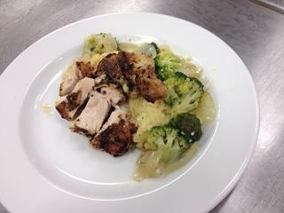

Culinary Years Throwback
As an indirection to a reversion in time, the popular method would be a reminisce to previous construct years. However, in the case of such impractical, and quite frankly random and unexpected, premises as this presence, the word is more on a mixture of past and further previous. For this particular measurement of face value presentation, the conversation is with regards to years up to (although not limited to) 2015 and prior. Much of the talk pertains to such situations as either home preparations or my personal early introduction into the world of culinary arts.
 Culinary Cooking